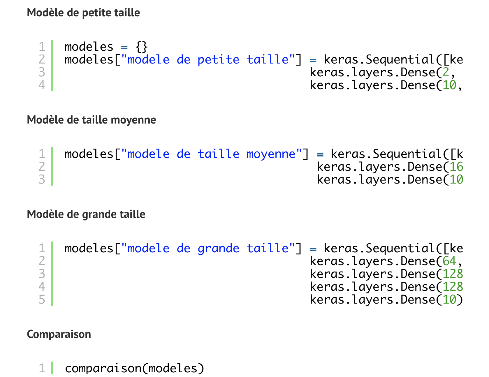

Le sous-apprentissage et le sur-apprentissage sont des concepts très importants à maîtriser en deep learning.
Le premier est le fait qu’un modèle n’arrive pas généraliser ce qui fait qu’il a des mauvaises performance sur les données d’entraînements et le deuxième est le fait que le modèle mémorise les données et réalise des mauvaises performances sur les données de test. Je vais créer 3 modèles pour illustrer ces concepts, par la suite je vais montrer quelques techniques pour contrer ces problèmes.
Après 20 époques
Le modèle de petite taille a une précision de 42% pour l’entrainement est la validation, il n’arrive pas à généraliser(sous-apprentissage).
Le modèle de taille moyenne a une précision de 89% pour l’entrainement et 87% pour la validation, sur le graphique on voit que les deux erreurs sont entrain de diminuer donc ce n’est pas encore un sur-apprentissage.
Pour le modèle de grande taille sur le graphique on voit qu’à partir d’un certain point l’erreur d’entrainement baisse mais l’erreur de validation continue d’augmenter, c’est un sur-apprentissage, le modèle commence à mémoriser les données.
Stratégies pour lutter contrer ces phénomènes
Sous-apprentissage
- Ajouter la quantité de données
- Augmenter taille ou le nombre de paramètres du modèle
- Augmenter le temps d’apprentissage jusqu’à minimiser l’erreur
- Choisir un modèle plus complexe
Sur-apprentissage
- Regularisation
- Early stopping
- Dropout